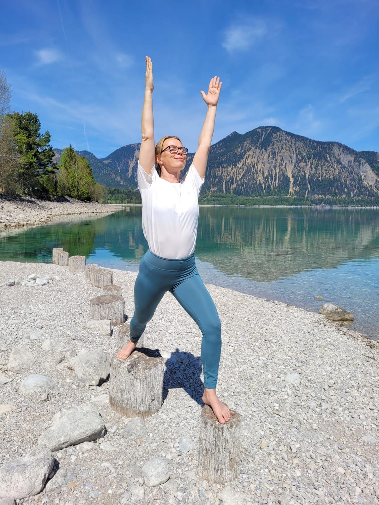

Zeit für dich.
Entspannung pur.
Yoga und Massage in München-Harlaching, in einem ruhigen, privaten Raum. Achtsame Stunden für einen Körper, der eine Pause verdient hat.
✓ Ausgebildet in Yin Yoga, Yoga-Therapie, Zen Shiatsu & Thai Yoga-Massage
Termin buchen
So fühlt sich eine Stunde an.
Achtsam
Ich höre zu, bevor ich beginne. Jede Stunde richtet sich nach dem, was dein Körper gerade braucht – nicht nach einem festen Programm.
Ruhig
Kein Tempo, kein Druck. Yin Yoga und Massage leben von der Langsamkeit – Zeit wird dort gegeben, wo sie gebraucht wird.
Genau richtig
Weder zu viel noch zu wenig. Beweglichkeit, Kraft und Berührung werden so dosiert, dass genau das Richtige für dich entsteht.
Lagom trifft OM.
LagOHM verbindet das schwedische lagom – die Kunst des richtigen Maßes – mit dem Klang des Yoga. Ich bin Helena: in Schweden aufgewachsen, seit vielen Jahren in München zuhause, und ich unterrichte Yoga und gebe Massagen in Harlaching.
Nach Jahren in Yin Yoga, Yoga-Therapie, Zen Shiatsu und Thai Yoga-Massage weiß ich: Nicht mehr ist mehr – sondern genug ist genug. Genau darum geht es bei LagOHM.
Termine finden nach Vereinbarung statt – auf Schwedisch, Deutsch oder Englisch, ganz wie es dir am liebsten ist.
- Für alle mit viel Schreibtisch- und wenig Bewegungszeit
- Für alle, die durch Anspannung schlechter schlafen oder sich verspannt fühlen
- Für alle, die eine ruhige Stunde ganz für sich möchten – ohne Leistungsdruck
Massage – ankommen & loslassen
Individuelle, ganzheitliche Körperarbeit, die Elemente aus Thai Yoga-Massage, Shiatsu und anderen Körperarbeits- und Bewegungstechniken verbindet – intuitiv auf dich und das, was du gerade brauchst, abgestimmt.
Wie die Massage abläuft
Du bleibst bekleidet und liegst auf einer weichen Matte am Boden. Mit sanften Dehnungen, fließenden Bewegungen, gezieltem Druck und Berührung entsteht eine individuell auf dich abgestimmte Behandlung.
Ohne festes Schema
Ich nehme wahr, höre zu und orientiere mich daran, was dein Körper und dein momentaner Zustand brauchen. So entsteht die Massage intuitiv und immer wieder anders.
Im Mittelpunkt: tiefe Entspannung
Ein Loslassen auf körperlicher und mentaler Ebene, das Raum für Regeneration, Ruhe und neue Balance schafft.
Yoga – ganz für dich
Individueller Einzelunterricht, abgestimmt auf deinen Körper, deine Bedürfnisse und das, was du gerade brauchst. Ohne Leistungsdruck – mit Raum, wirklich bei dir anzukommen.
Yin Yoga & Yoga-Therapie-Ansatz
Mein Schwerpunkt liegt auf ruhigem Yin Yoga und einem Yoga-Therapie-Ansatz. Atem, achtsame Bewegung, länger gehaltene Positionen und individuelle Anpassungen unterstützen dich dabei, deinen Körper bewusster wahrzunehmen, Spannungen loszulassen und zur Ruhe zu kommen.
Individueller Yogaunterricht
Jede Stunde entsteht aus dem, was du mitbringst. Je nach Bedarf fließen sanfte Mobilisation, Stabilität, Beweglichkeit sowie Hatha- und Vinyasa-Elemente ein.
Bereit für deine Stunde?
Termine nach Vereinbarung · München-Harlaching
Auf Schwedisch, Deutsch oder Englisch · Hausbesuche auf Anfrage
Gut zu wissen.
Im privaten Raum in München-Harlaching. Die genaue Adresse erhältst du nach der Terminbestätigung.
Auf Anfrage komme ich auch zu dir nach Hause, in und um München. Schreib mir einfach kurz, wohin es gehen soll, dann schauen wir gemeinsam, ob es passt.
Bequeme, weiche Kleidung, in der du dich frei bewegen kannst. Bei der Massage bleibst du vollständig angezogen.
Wir beginnen kurz mit ein paar Worten darüber, wie es dir gerade geht. Danach übernimmt dein Körper den Rest – in deinem Tempo, ohne Programm.
Auf Schwedisch, Deutsch oder Englisch – ganz wie es dir am liebsten ist.
Bar oder per Überweisung, direkt vor Ort oder im Anschluss an die Stunde.
Nein. Yoga und Massage bei LagOHM sind achtsame Körperarbeit und ersetzen keine medizinische oder therapeutische Behandlung.